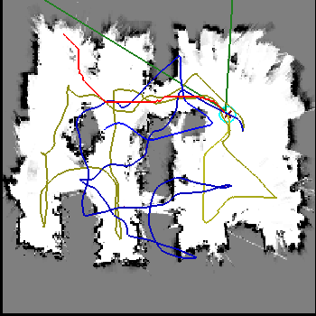
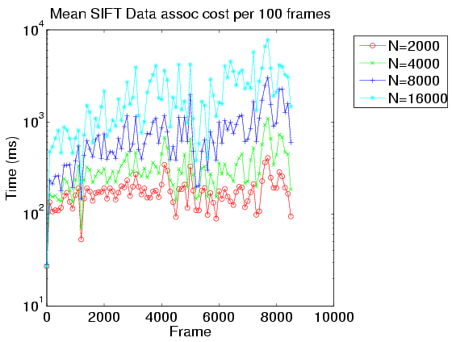
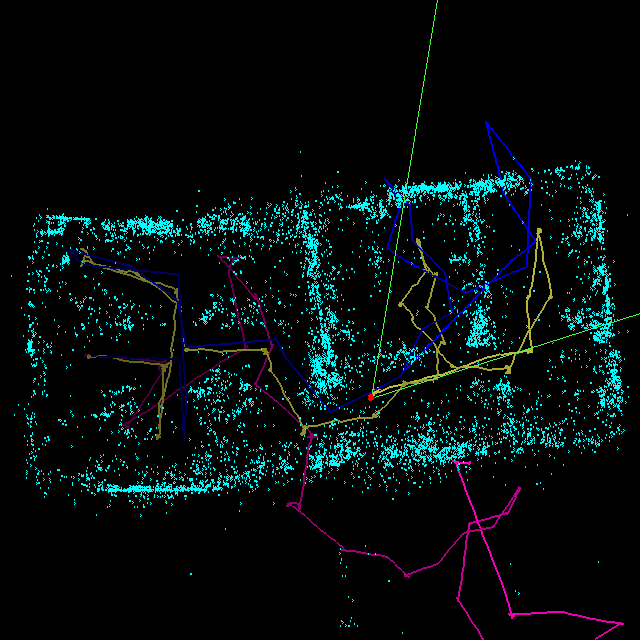
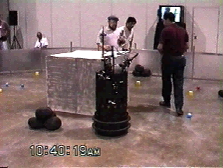
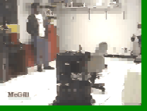
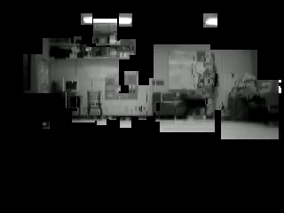
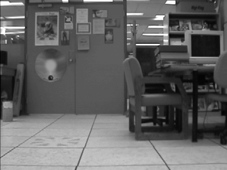

Research
Here's a video of my postdoc work @ UBC.
Ten years later (6/1/2018):I'm a Principal Applied Scientist at Microsoft Research. This page is very stale, it's mainly here for posterity.
Status Nov 08: Back to Microsoft! I'll be joining the Windows Live Experience Team as an Applied Researcher, starting Dec 1.
News as of March 07: I was a Senior Robotic Vision Scientist at Braintech.
News as of July 31/06: I moved to Microsoft's adCenter Labs, where I'll be the resident vision guy.
From 2004-2006, I was a post-doc working with Jim Little and David Lowe at the Laboratory for Computational Intelligence at UBC. The problems I'm interested in concern robotic exploration and formulating useful policies for exploring large spaces and building visual representations of the world.
I co-chaired the 2nd Canadian Conference on Computer and Robot Vision May 9-11, 2005 in Victoria, BC.
Projects
- Look, ma- no lasers! Real-time exploration and mapping using vision.
- Why doesn't FastSLAM scale?
- 6-DOF Vision-based mapping with Rao-Blackwellised Particle Filters
- Vintage footage: Vision-based robotics, ca. 1997
- Bearings-only SLAM
- Visual Maps
- Pose-calibrated images
- The AQUA project
Look, ma- no lasers! Real-time exploration and mapping using vision.
 Click on the image at right to view an animation of vision-based occupancy mapping. Over the last few months I've implemented an autonomous exploration and mapping system that uses *only* vision to explore an environment and construct a useful map. The system uses our RBPF SLAM implementation to keep an accurate map, and stereo occupancy grids for planning and obstacle avoidance. The key to achieving accuracy is to perform SLAM on a sparse landmark map, and compute the occupancy grid as a by-product of the RBPF- we never try to localize in the grid. This work is described in our upcoming IROS paper, which has been nominated for best paper. :-)Why doesn't FastSLAM scale
 In theory, RBPF-based SLAM filters scale linearly with the number of samples. In actual practice this isn't the case. Click here for the reason.6DoF Vision-Based Mapping with Rao-Blackwellised Particle Filters
 I've been involved in an ongoing project to implement vision-based mapping for large-scale environments (bigger than a single room). With the help of Matt Griffin, Pantelis Elinas, Alex Shyr, and Jim Little, we've implemented a system that can handle hundreds of thousands of visual landmarks over long 6-DOF trajectories, without control or odometric information. Click here for more details. This work received the "Best Robotics Paper" award at CRV 2006.From the Vaults: Vision-based robotics, ca. 1997
  Vintage quicktime footage of Invader at the AAAI 97 Mobile Robotics Competition in Providence, RI. The robot used supervised colour-space training to detect objects and obstacles with a monocular camera at 10Hz. We took home first place two years running. (Sorry for the low image quality - this was high tech digital imagery at the time). The second link is more of a 'making-of', featuring yours truly as the mad scientist.Bearings-only SLAM
 I'm currently working on exploration
strategies for constructing accurate maps from bearings-only sensor
observations. Click the image at left for more details.
I'm currently working on exploration
strategies for constructing accurate maps from bearings-only sensor
observations. Click the image at left for more details.
Visual Maps
 My graduate work focused on the problem of learning a representation of the visual world from an ensemble of images. The work focused on modeling the behaviour of salient features extracted from a scene, as a robot moves through the environment. Click on the image at left for a short video of a set of feature models rendered along an imaginary trajectory. See also my Ph.D. thesis.Aqua
 I'm involved with the McGill/York/Dalhousie AQUA underwater
robot project. In January, 2004 we were at the Bellairs marine research station in
Barbados for field
trials. (Including pictures and video footage). more footage is
available at this CIM ARL
page. York also has some more footage here. Update
(2004/03/12): Today Wired ran a good story about the project.
I'm involved with the McGill/York/Dalhousie AQUA underwater
robot project. In January, 2004 we were at the Bellairs marine research station in
Barbados for field
trials. (Including pictures and video footage). more footage is
available at this CIM ARL
page. York also has some more footage here. Update
(2004/03/12): Today Wired ran a good story about the project.
Pose-calibrated images
 Some archives of pose-calibrated images for localization and structure-from-motion research.Teaching
- Fall 2004: CPSC 315: Introduction to Operating Systems
- Summer 2004: CPSC 219: Software Development Laboratory
UBC/CS Local stuff
- The UBC Machine Learning Wiki
- A remote printing @cs howto for laptops running linux.
- An ifup-local script for automagically logging in to UBC wireless and setting a zoneedit DNS entry at boot time.
- Another script: rc.local_networking that automagically port-forwards all the UBC/CS services for you: mail, imap, samba and news. It also demonstrates how to mount your ubc home directory on your laptop.
Links
my blogs | Nisha Nathani | Nisha Nathani M.A. Thesis | people | photos | nethack | robot news | a robotics blogRobert Sim, Last modified: 17 Nov 2008